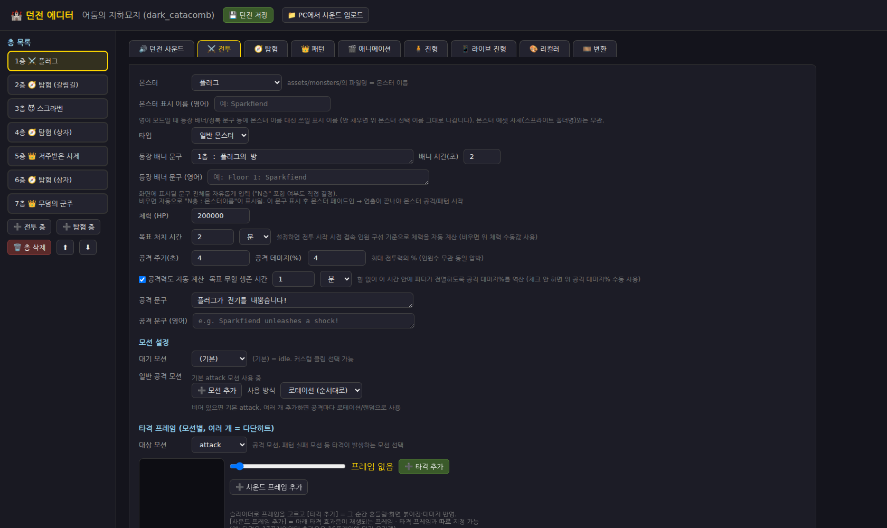
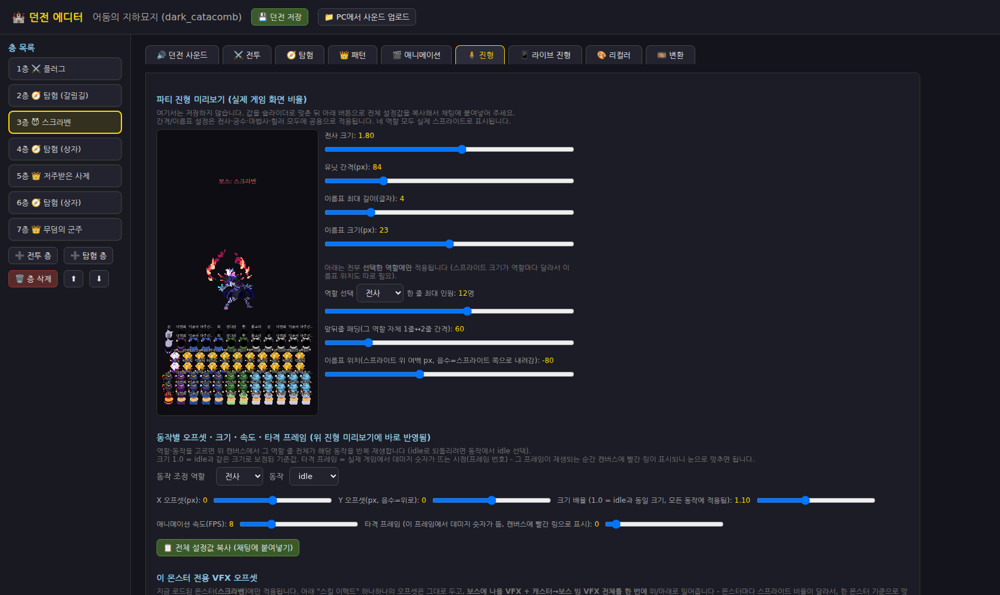
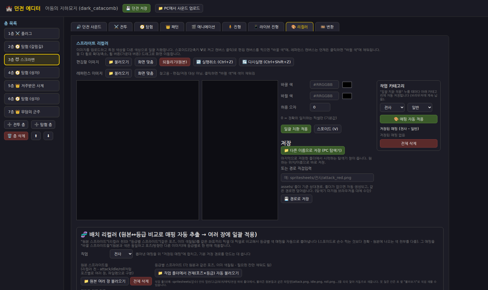
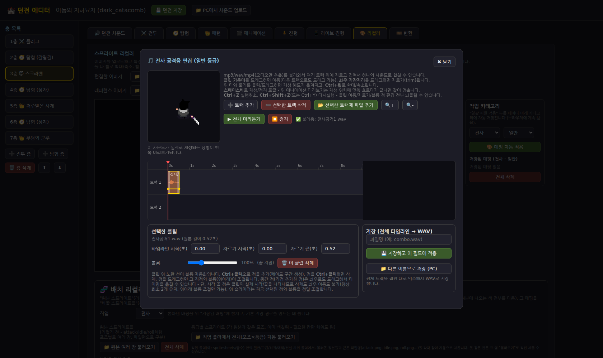
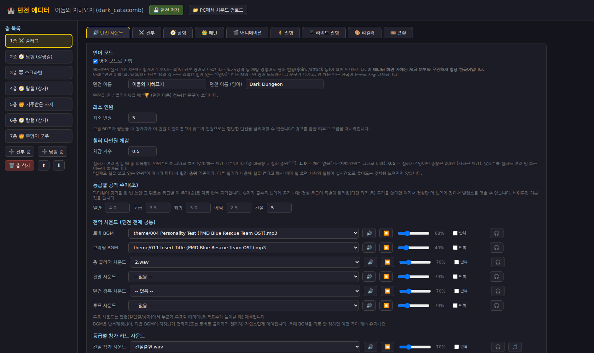
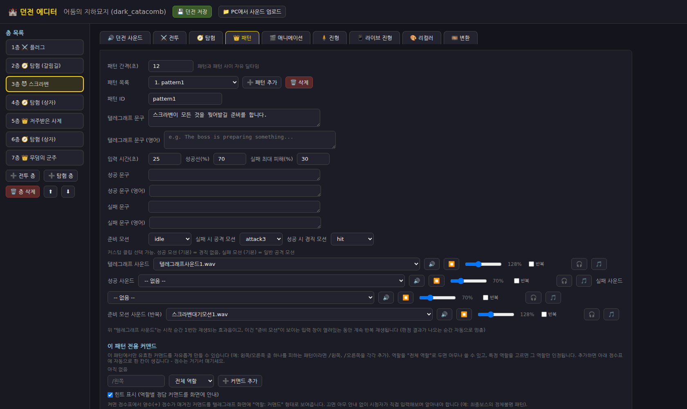

이 프로젝트는 코드 작성 전 과정에 Claude Code(Anthropic)를 개발 파트너로 활용했습니다.
게임 내 이미지 에셋 초안 제작에는 Gemini(Google)를 사용했습니다. 두 도구 모두 무엇을
어떻게 만들지는 개발자가 직접 정하고, AI는 그 방향을 코드나 이미지로 구현하는 역할을
맡았습니다.
영역
AI 도구
활용 내용
코드 전반 (백엔드·프론트엔드·던전 에디터)
Claude Code
자연어 요구사항 → 코드 구현, 버그 원인 분석, 리팩터링
이미지 에셋
Gemini
던전 배경, 캐릭터 스프라이트, 스킬 아이콘 초안 생성
2. AI 활용 구조 — 던전 에디터 중심 개발
이 프로젝트에서 Claude Code를 가장 집중적으로 활용한 부분은 게임 로직 자체보다
던전 에디터(tool.html)입니다. 몬스터·패턴·탐험 이벤트·사운드·캐릭터
진형·스프라이트 색상까지, 던전 하나를 통째로 코드 수정 없이 화면에서 직접 보면서 조정하고
저장 버튼 한 번으로 실제 게임에 반영하는 자체 제작 툴입니다. 기획을 코드로 옮기는 게 아니라,
에디터 화면에서 그림 그리듯 완성한 결과가 곧 게임 데이터가 되는 방식입니다.
이 에디터를 만든 이유는 두 가지입니다.
🧩
콘텐츠 반복 작업을 코드 수정 없이던전은 층마다 몬스터·패턴·탐험 분기·사운드가 전부 다릅니다. 매번 코드를 고치는 대신,
에디터에서 값을 조정하면 바로 던전 JSON에 저장되고 게임에 반영되도록 만들어서 반복 작업
속도를 크게 줄였습니다.
👀
결과를 보면서 조정진형 배치, 스프라이트 오프셋, VFX 위치, 사운드 타이밍처럼 수치만으로는 감이 안 오는
값들을 에디터 미리보기 화면에서 실시간으로 확인하며 조정합니다. 실제 게임 화면과 1:1
비율로 미리보기를 맞춰서, 에디터에서 본 그대로 인게임에 나오게 했습니다.
에디터 탭 구성
탭
기능
🔊 던전 사운드
로비 BGM 등 던전 전역 사운드 설정
⚔️ 전투
층별 몬스터 스탯, 공격 주기, 처치 목표 시간 기반 자동 밸런싱
🧭 탐험
갈림길/상자 등 이벤트 문구, 정답/오답 결과, 환경음
👑 패턴
보스 패턴(텔레그래프 · 파훼 게이지 · 성공/실패 판정) 설정
🎬 애니메이션
스프라이트시트 프레임을 잘라 애니메이션 클립 제작, 타격 프레임 지정
🧍 진형 / 📱 라이브 진형
파티 대열 배치를 실제 게임 화면 비율로 미리보며 슬라이더로 조정
🎨 리컬러
스프라이트 색상 일괄 치환 (색상 매핑 기억 기능 포함, 아래 참고)
🎞️ 변환
PNG+plist 스프라이트시트를 애니메이션으로 자동 변환, 리컬러와 연동
이 중 🎨 리컬러 탭과 필드 옆 🎵 버튼으로 열리는 사운드 메이커는 특히
개발 편의성을 위해 별도로 설계한 도구입니다.
리컬러 탭: 스프라이트 이미지를 업로드하고 스포이드로 색을 찍으면 "이 색 → 이 색"
매핑이 기록되고, 버튼 한 번에 이미지 전체에 일괄 적용됩니다. 같은 캐릭터의 여러 동작(idle/attack
등) 스프라이트를 연달아 작업할 때, 이전에 썼던 색 매핑을 기억해뒀다가 다음 이미지를 불러오면
자동으로 같은 치환을 적용하는 기능도 있어 등급별 색상 배리에이션 제작 속도를 높였습니다.
사운드 메이커: 영상 편집 툴처럼 여러 트랙 위에 mp3/wav 파일을 올려 자르고(trim)
겹쳐서 하나의 새로운 효과음으로 믹스다운(WAV로 저장)할 수 있는 도구입니다. Motion Array에서
받은 원본 효과음 여러 개를 조합해 이 게임만의 고유한 효과음을 만드는 데 사용했습니다.
3. 주요 프롬프트 예시
아래는 Claude Code와의 실제 대화 중, 에디터/게임 시스템이 만들어진 과정을 보여주는 대표
프롬프트와 그 결과 화면입니다 (날짜 순 · 실제 대화 원문 · 이해하기 어려운 구어체 일부만
가독성을 위해 다듬었습니다).
2026-07-18
"그 파일명으로 단순히 연결하는 게 아니라, 몬스터 애니메이션 에디터에서 모든 걸 결정할 수
있어야 해. 몇 층에 나올 건지, 공격할 때 뭐라고 뜰지, 등등. 애초에 몬스터 애니메이션 에디터보다는,
던전 층수 에디터로 나중에 확장할 거야. 그냥 모든 방을 이 에디터에서 관리하고, 개발할 수 있게.
이해했어? 그러니까 여기서 '던전 저장!' 버튼을 누르면 1층에 어떤 몬스터가 나오는지, 패턴은 뭔지,
공격할 때 뭐라고 뜰지, 몇 프레임에서 타격 효과가 나와야 할지, 체력은 얼마나 될지 같은 부분들을
다 짤 수 있게. 바로 구현하지 말고, 이해한 걸 먼저 설명해봐"
→ 던전 에디터를 "몬스터 하나 편집"에서 "던전 전체 관리 툴"로 확장하기로 결정한 최초 지시
결과 — ⚔️ 전투 탭

2026-07-24
"각 도열에서, 전사 크기, 이름표 최대 길이, 전사 사이의 간격을 던전 에디터에서 슬라이더로
조절하고 싶어. 이름표 위치, 이름표 크기 등을 시각적으로 보여주고, 슬라이더로 조절해서, 그 값을
너한테 알려줄게 너가 바꿔줘."
→ "수치만 던지지 않고, 에디터에서 보면서 조정한 값을 코드에 반영" 워크플로우가 확립된 지점
결과 — 🧍 진형 탭

2026-07-25
"이거 혹시 에디터에서, 스프라이트 색을 다른 색으로 바꿀 수 있는 탭 하나 만들 수 있나?
그러니까 이미지를 하나 업로드하고, 하나의 색상 코드 → 다른 색상 코드 입력하고 버튼을 누르면,
일괄적으로 바뀌게 하는 거고, 다 끝나고 저장 버튼을 누르면, 이름을 바꿔서 원하는 경로 위치에
저장할 수 있게. 스포이드 기능이 있어서(단축키 V) 스포이드로 누르면, 그 부분의 색상 코드가
자동으로 '바꿀 색' 입력칸에 들어가게. 구현하지 말고, 가능한지 확인해줘"
→ 🎨 리컬러 탭의 최초 요구사항
결과 — 🎨 리컬러 탭

2026-07-25
"이거 사운드 만들기 툴도 만들 수 있나? mp3, wav, mp4(이거는 사운드 추출) 해서, 내가
원하는 대로 앞뒤 자르고, 여러 사운드 겹치게 해서, 하나의 사운드를 저장하는 거야. 마치 프리미어
프로 작업처럼, 사운드를 겹치게도, 자르기도 할 수 있게. 여러 줄 위에서. 가능해? 구현하지 말고
설명해봐"
→ 사운드 메이커(멀티트랙 편집 툴)의 최초 요구사항
결과 — 🎵 사운드 메이커

2026-07-31
"언어 모드가 던전 에디터에 있었으면 좋겠어. 글로벌을 타겟으로 할 거라, 모든 언어를 한국어
vs 영어로 하고 싶은데, 현재 한국어가 적혀져 있는 부분을 확인하고, 어떤 식으로 영어로 바꿀지.
그리고 던전 에디터에 체크박스로 한국어모드, 영어모드 정했으면 좋겠어. 물론 에디터는 언어 상관
없이 한국어고. 이해했어? 코드 확인하고, 구현하기 전에 먼저 설명해봐"
→ 다국어(한/영) 지원 요청. "구현 전에 먼저 설명해봐"처럼, 큰 변경 전엔 항상 방식을
먼저 설명하게 하고 확인 후 구현시키는 패턴을 일관되게 사용
결과 — 🔊 던전 사운드 탭 (언어 모드)

아래는 3층 보스 "스크라벤"의 패턴(파훼 게이지) 설정 화면입니다. 텔레그래프 문구, 입력 시간,
성공선(%), 실패 시 최대 피해(%), 판정 시 재생될 애니메이션, 역할별 정답 커맨드까지 코드 수정
없이 이 화면에서 전부 정의합니다.
결과 — 👑 패턴 탭 (3층 스크라벤)

이 외에도 VFX 위치 동기화, 몬스터 공격 사운드 타이밍, 최소 참가 인원 설정 등 다수의 구체적
지시를 통해 에디터 기능을 단계적으로 확장했습니다.
4. 이미지 생성 AI 활용 (Gemini)
던전 배경, 로비 참가 카드에 쓰인 직업별 캐릭터 스프라이트, 스킬 아이콘의
초안 이미지를 Gemini로 생성했습니다.
생성된 이미지는 그대로 쓰지 않고, 배경을 투명 처리하고 게임 해상도·스타일에 맞게
하나하나 수작업으로 잘라 붙이는 후처리를 거쳐 실제 에셋으로 만들었습니다.
등급별 색상 배리에이션은 위에서 설명한 🎨 리컬러 에디터로 자체 제작했습니다.
전투 중 실제로 움직이는 직업별 애니메이션 스프라이트시트는 Gemini가 아닌 별도 구매
에셋입니다 (출처는 아래 5번 표 참고).
5. 외부 에셋 · 오픈소스 출처
에셋
출처
사용 방식 / 비고
몬스터 · 보스 애니메이션 스프라이트시트
Duelyst (오픈소스 공개 에셋, GitHub)
커뮤니티에 공개된 오픈소스 에셋 사용
직업별(전사·궁수·마법사·힐러) 전투 애니메이션 스프라이트시트
itch.io 유료 에셋
구매한 유료 에셋 사용
배경음악(BGM)
『포켓몬스터 불가사의 던전: 파랑구조대』 게임 음원
⚠ 원작(닌텐도/스파이크 춘소프트) 저작권이 있는 상용 게임 음원을 그대로 사용
효과음(SFX)
Motion Array (유료 라이선스 스톡 사운드)
다수의 원본 효과음을 자체 제작 사운드 메이커로 편집·믹스하여 새로운 효과음으로 가공 후 사용
서울남산체 (SeoulNamsanB / SeoulNamsanEB)
서울특별시 공공디자인 배포 폰트
무료 배포 폰트
DungGeunMo 폰트
projectnoonnu (GitHub, jsDelivr CDN 로딩)
무료 한글 폰트 배포 프로젝트
Phaser 3
photonstorm/phaser (오픈소스, MIT License)
게임 렌더링 엔진, CDN 로딩
Socket.IO
오픈소스 (MIT License)
실시간 통신 라이브러리
pytchat
오픈소스 (Python 라이브러리, GitHub)
유튜브 라이브 채팅 수집용 백엔드 라이브러리
참고: 배경음악으로 사용한 포켓몬스터 파랑구조대 OST는 원작사의 저작권이 있는 상용 게임
음원이며, 별도의 사용 허가는 받지 않았습니다.